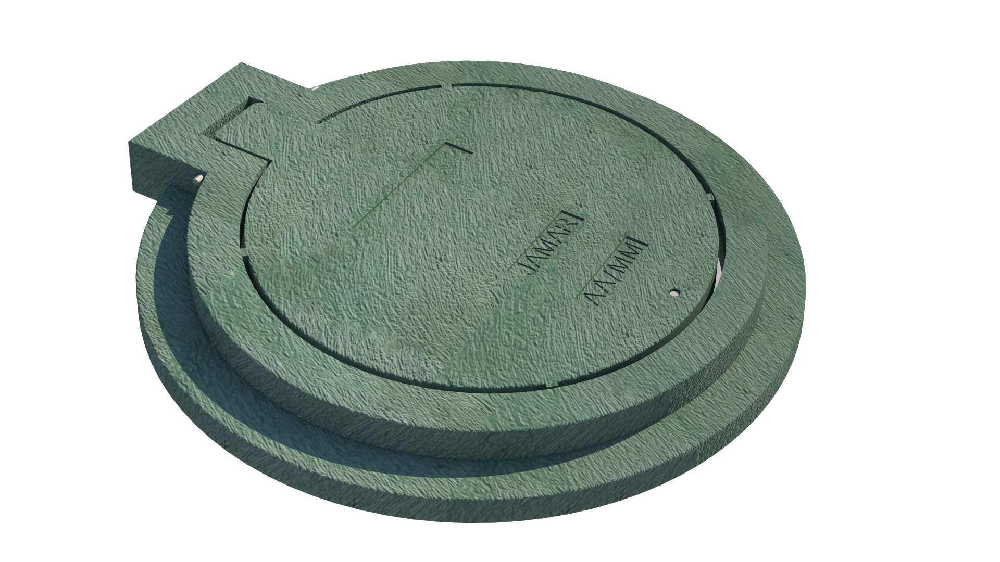

Aro Tapa Pozo Peatonal

Características:
usadas para cámaras de inspección de redes de alcantarillado.
Dimensiones:
Anillo: Diámetro Externo: 720mm Alto: 85mm
Tapa: Diámetro Externo: 610mm Alto: 50mm
Ficha Técnica